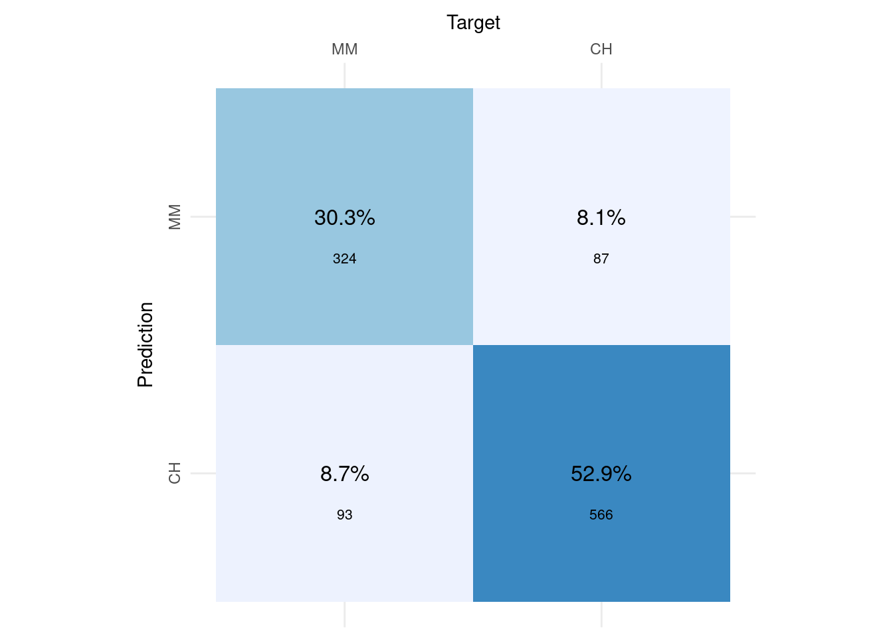

✔️ Week 08 - Lab Solutions
DS202 - Data Science for Social Scientists
This notebook contain solutions to Take-home exercises in Week 08 Lab.
🏠 Take-home exercise Q1:
Edit the cell below modifying event_level from "second" to "first". Why do you get different results? What do you think is going on?
💡Tip: Read the documentation of f_meas to understand what event_level represents. (Type ?f_meas)
💡 Gold Tip: note the Levels of the factor variable called Purchase:
plot_df$PurchaseSolution:
The parameter
event_levelrefers to the levels of the target variable:
levels(plot_df$Purchase)[1] "CH" "MM"From the above, we see that
CHis the first level, andMMis the second level. Don’t know what a level is? Take a look at Chapter 15 of R for Data Science to revisit the concept of factors (categorical variables).F1-score is always calculated in reference to one level. So, if we want to get the F1-score for the
"CH"class, we useevent_level="first":
plot_df %>% f_meas(Purchase, .pred_class, event_level="first")# A tibble: 1 × 3
.metric .estimator .estimate
<chr> <chr> <dbl>
1 f_meas binary 0.861Similarly, if we want to calculate the F1-score for the
"MM"class, we have to look atevent_level="second":
plot_df %>% f_meas(Purchase, .pred_class, event_level="second")# A tibble: 1 × 3
.metric .estimator .estimate
<chr> <chr> <dbl>
1 f_meas binary 0.778🏠 Take-home exercise Q2:
Create a plot of the confusion matrix for the orange_tidymodel like we did in Step 1
Q2. Solution
Code
# It's almost the same thing; only this time let's use the `.pred_class` column that was created when we augmented our data frame.
confusion_matrix <- table(expected=plot_df$Purchase, class_pred=plot_df$.pred_class)
plot_confusion_matrix(as_tibble(confusion_matrix),
target_col = "expected",
prediction_col = "class_pred",
# Customizing the plot
add_normalized = TRUE,
add_col_percentages = FALSE,
add_row_percentages = FALSE,
counts_col = "n",
)Warning in plot_confusion_matrix(as_tibble(confusion_matrix), target_col =
"expected", : 'ggimage' is missing. Will not plot arrows and zero-shading.
🏠 Take-home exercise Q3:
Create a plot of SVM decision space for the orange_tidymodel like we did in Step 1.
Q3. Solution
It’s almost the same thing; only this time we use the
augment()function and refer to.pred_classwhen creating the plot.
Code
sim.data <- crossing(LoyalCH = seq(0,1,0.05), PriceDiff = seq(-1,1,0.1))
sim.data <- augment(orange_tidymodel, sim.data)
g <- (
plot_df %>%
ggplot()
# Tile the background of the plot with SVM predictions
+ geom_tile(data = sim.data, aes(x=LoyalCH, y=PriceDiff, fill = .pred_class), alpha = 0.25)
# Actual data
+ geom_point(aes(x=LoyalCH, y=PriceDiff, colour = Purchase, shape = is_correct), size=2.5, stroke=0.95, alpha=0.7)
# Define X and Os
+ scale_shape_manual(values = c(4, 1))
# (OPTIONAL) Customizing the colours and theme of the plot
+ scale_x_continuous(labels=scales::percent)
+ scale_colour_startrek()
+ scale_fill_startrek()
+ theme_minimal()
+ theme(panel.grid = element_blank(), legend.position = 'bottom', plot.title = element_text(hjust = 0.5))
+ labs(x = 'Customer brand loyalty for CH', y = 'Sale price of MM less sale price of CH', fill = 'Brand', colour = 'Brand', shape = 'Correct prediction?', title = sprintf('Overall Training Accuracy = %.2f %%', 100*(sum(plot_df$is_correct)/nrow(plot_df))))
)
g🏠 Take-home exercise Q4:
- Retrain the model in Step 3 for
Smarket, this time usingsvm_linearinstead ofsvm_rbf. - Reuse the code in Step 3.4 to replicate the plots and metric calculations for this new model.
- Which model fits the target variable (
Today) better?
Q4. Solution
Train the model
Code
# Remove Direction, otherwise we would be "cheating"
filtered_data <- ISLR2::Smarket %>% select(Today, Volume, Lag1)
alternative_svm <-
svm_linear() %>%
set_mode('regression') %>%
fit(Today ~ ., data = filtered_data)
alternative_svmparsnip model object
$TypeDetail
[1] "L2-regularized L2-loss support vector regression primal (L2R_L2LOSS_SVR)"
$Type
[1] 11
$W
Volume Lag1 Bias
[1,] 0.05000429 -0.0249507 -0.07358462
$Bias
[1] 1
$NbClass
[1] 2
attr(,"class")
[1] "LiblineaR"Create a
plot_dfdata frame to use when plotting residuals.
Code
plot_df <-
augment(alternative_svm, filtered_data) %>%
mutate(row_number=row_number()) # adding this here just to make our plot easier
plot_df# A tibble: 1,250 × 6
Today Volume Lag1 .pred .resid row_number
<dbl> <dbl> <dbl> <dbl> <dbl> <int>
1 0.959 1.19 0.381 -0.0235 0.983 1
2 1.03 1.30 0.959 -0.0327 1.06 2
3 -0.623 1.41 1.03 -0.0288 -0.594 3
4 0.614 1.28 -0.623 0.00577 0.608 4
5 0.213 1.21 0.614 -0.0286 0.242 5
6 1.39 1.35 0.213 -0.0114 1.40 6
7 -0.403 1.44 1.39 -0.0361 -0.367 7
8 0.027 1.41 -0.403 0.00687 0.0201 8
9 1.30 1.16 0.027 -0.0161 1.32 9
10 0.287 1.23 1.30 -0.0445 0.331 10
# … with 1,240 more rowsPlot the residuals:
Code
g <- (
ggplot(plot_df, aes(x=row_number, y=.resid))
+ geom_point(alpha=0.6)
+ theme_bw()
+ geom_hline(yintercept = c(-2,2), color="red", linetype="dashed")
+ labs(title="Distribution of residuals (the closer to zero the better)")
)
gIs this model better? It’s not easy to say from the residuals plot alone, so let’s calculate the metrics:
plot_df %>% mae(Today, .pred)# A tibble: 1 × 3
.metric .estimator .estimate
<chr> <chr> <dbl>
1 mae standard 0.828plot_df %>% rmse(Today, .pred)# A tibble: 1 × 3
.metric .estimator .estimate
<chr> <chr> <dbl>
1 rmse standard 1.14The linear SVM had a slightly worse fit than the SVM with Radial Basis Function (Gaussian) we ran earlier. Both MAE and RMSE were smaller in the svm_rbf results:
| MAE | RMSE | |
|---|---|---|
svm_rbf |
0.789891 | 1.09561 |
svm_linear |
0.82845 | 1.135357 |